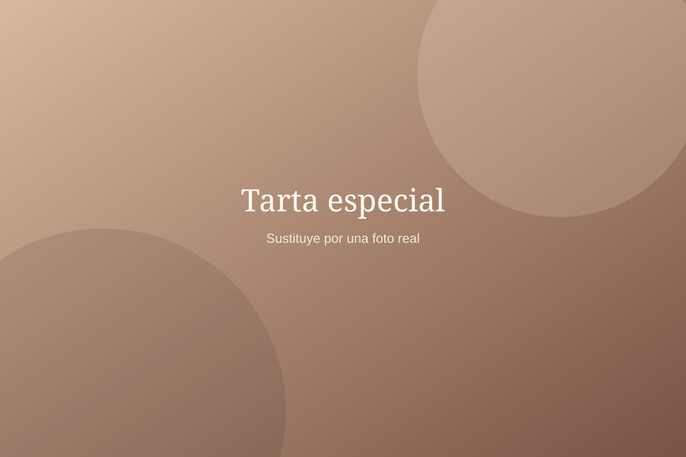

Un pequeño placer, cada día
La vida sabe
mejor con algo dulce.
Pastelería hecha con mimo, pan recién hecho y ese café que siempre apetece. Te esperamos en Guardo.
Hecho para disfrutar
Bienvenidos a nuestra casa
Tradición, sabor
y un toque de dulzura.
Un dulce para compartir, una barra para llevar a casa o una pausa para disfrutar de un buen café. Descubre todo lo que tenemos preparado.
Conoce nuestra historia →Nuestros sabores
Algo rico te está esperando.
Elige tu momento favorito y descubre lo que tenemos preparado.

Momentos especiales
Hay celebraciones
que merecen una tarta.
Un cumpleaños, una reunión familiar o simplemente porque sí. Descubre nuestras propuestas y consulta en la tienda sobre opciones y encargos.
Explorar pastelería ↗Estamos en Guardo
Tu próxima parada rica.
Acércate a conocernos. Estaremos encantados de recibirte.